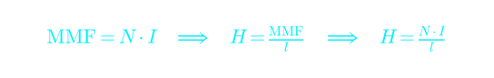
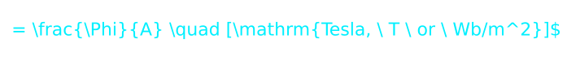
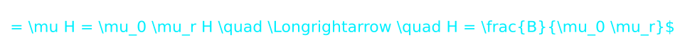
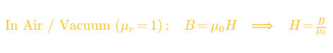
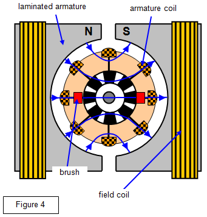
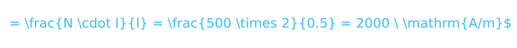
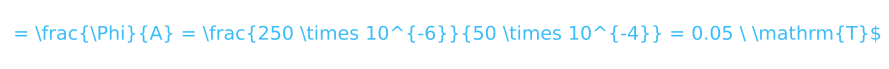
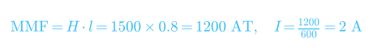
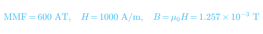

MAGNETISING FORCE (H) PRODUCED BY ELECTRIC CURRENT
A rigorous technical exploration of electromagnetism, magnetomotive potential, flux density coupling, and rotational air gap clearance in electrical machinery.
• 1. Oersted's Landmark Discovery (1820)
Hans Christian Oersted proved that electric current flowing through a metallic conductor deflects a compass needle. Moving electric charges directly generate a surrounding magnetic field.
• 2. Right-Hand Grip Rule
Grasp the conductor with your right hand such that the thumb points in the direction of conventional current (I). Your curled fingers trace the circular direction of concentric magnetic field lines.
• 1. Definition of Magnetic Flux
Magnetic Flux is defined as the total number of magnetic lines of force passing perpendicularly through a given cross-sectional area in a magnetic field.
• 2. Symbol & SI Unit
- • Symbol: Greek letter Φ (Phi)
- • SI Unit: Weber (Wb), named after Wilhelm Weber
- • CGS Conversion: 1 Wb = 108 Maxwell (lines of force)
- • Base Equivalent: 1 Wb = 1 Volt · second (V·s)
• 3. Continuous Closed Loops
Unlike electric field lines that start on positive and terminate on negative charges, magnetic flux lines always form unbroken closed loops (∇·B = 0). Isolated magnetic monopoles do not exist in nature.
• 1. Physical Concept of MMF
Magnetomotive Force (MMF) is the magnetic driving pressure that establishes and maintains magnetic flux through a magnetic circuit, directly analogous to Electromotive Force (EMF) driving electric current.
- • N: Number of coil turns (dimensionless integer)
- • I: Current flowing through each conductor (Amperes, A)
| PARAMETER | ELECTRIC CIRCUIT (EMF) | MAGNETIC CIRCUIT (MMF) |
|---|---|---|
| 1. Driving Potential |
Electromotive Force (EMF) Symbol: V or E | Unit: Volts (V) |
Magnetomotive Force (MMF) Symbol: F | Unit: Ampere-Turns (AT) |
| 2. Flow / Effect |
Electric Current (I) Actual physical drift of charge carriers (dq/dt) in Amperes (A) |
Magnetic Flux (Φ) Established magnetic field lines through space/medium in Webers (Wb) |
| 3. Material Property |
Conductivity (σ) Ability of material to conduct electric charges (σ = 1/ρ) |
Permeability (μ) Ability of medium to support magnetic flux (μ = μ0μr) |
| 4. Energy Nature |
Continuous Energy Dissipation Continuous power is expended as Joule heating (I2R) to maintain current. |
Stored Potential Energy Zero energy needed to maintain steady flux once established (W = ½ L I2). |

- • H: Magnetising force (A/m)
- • N: Total coil turns
- • I: Excitation current (A)
- • l: Mean magnetic path length (m)
- Magnetic Field Strength
- Magnetic Field Intensity
- Magnetic Potential Gradient (-dF/dl)
Every additional turn encircles the core, adding an independent ampere-turn loop that contributes constructively to total MMF.
Current represents physical charge transport rate (dq/dt). Greater electron drift strengthens circular Amperean field intensity linearly.
The total MMF is distributed over the complete path length. A larger perimeter stretches the MMF across greater distance, diluting local intensity.
• 1. Magnetic Flux Density (B)
Magnetic Flux Density (B) measures the concentration of magnetic flux passing perpendicularly through a unit cross-sectional area:

• B (Effect): The resulting magnetic flux density produced inside the physical material.
• 2. Constitutive Equation (B = μH)


• Definition & Necessity
• Air gap is a small space between two magnetic parts.
• Air gap is a necessity in rotating machines such as a motor or a generator.
Separates fixed parts (stator field poles) and moving parts (rotating armature) to prevent physical friction, rubbing, and catastrophic mechanical damage during high-speed rotation.
2. Prevents Saturation in Magnetic Device:
Air has constant permeability (μr = 1) and never saturates. It introduces controlled reluctance, preventing the ferromagnetic core from saturating too early at normal operating currents.

Field windings produce intense H to establish working magnetic flux across the air gap. Rotor conductors interact with this flux to produce electromagnetic torque (T = k Φ Ia).
DC excitation current driven through rotor poles creates rotating magnetising force. By Faraday's Law, rotating flux lines cut stator coils to induce utility-scale AC EMF.
AC magnetising current creates alternating H that forces mutual magnetic flux through high-permeability silicon steel laminated cores without moving parts.
Scrap metal cranes and magnetic levitation (Maglev) trains utilize thousands of ampere-turns (NI) over compact path lengths to generate tremendous lifting forces (F = B2A / 2μ0).
Protective switchgear, circuit breakers, and automotive fuel injectors employ solenoid coils where magnetising force pulls spring-loaded iron plungers to close or open circuits in milliseconds.
Problem Statement: A coil has 200 turns and carries a direct current of 3 A. Calculate the resulting magnetomotive force (MMF).
Problem Statement: A coil has 500 turns, carries 2 A current, and has a magnetic path length of 0.5 m. Calculate the magnetising force (H).

Problem Statement: A toroidal coil has a path length of 0.4 m, magnetising force of 800 A/m, and current of 0.5 A. Find the required number of coil turns (N).
Problem Statement: A magnetic flux of 250 μWb passes perpendicularly through a core cross-sectional area of 50 cm². Calculate the flux density (B).

Problem Statement: A magnetic core has a mean length of 0.8 m and is wound with 600 turns. If the required magnetising force (H) is 1500 A/m, determine: (a) Total MMF, (b) Excitation current (I).

Problem Statement: A coil has 400 turns, carries 1.5 A, path length of 0.6 m, and area of 20 cm² in air. Calculate MMF, H, and B.

THANK YOU
We welcome questions, theoretical discussions, and faculty evaluations on Magnetising Force (H).